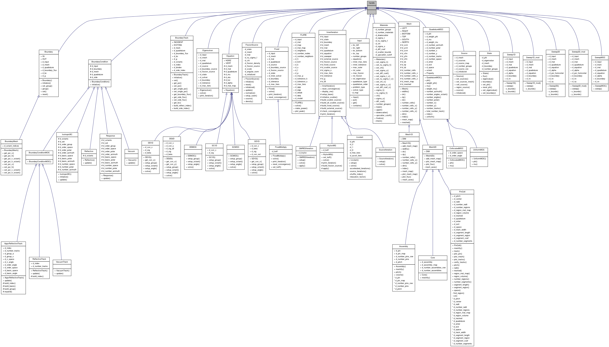

MatlabTransportPack
Main Page
Classes
Files
Class List
Class Hierarchy
Class Members
handle Class Reference
Inheritance diagram for handle:

[
legend
]
The documentation for this class was generated from the following file:
/home/robertsj/Research/matlab_transport_pack/source/
Materials.m
Generated on Tue Jan 17 2012 22:31:41 for MatlabTransportPack by
1.7.3